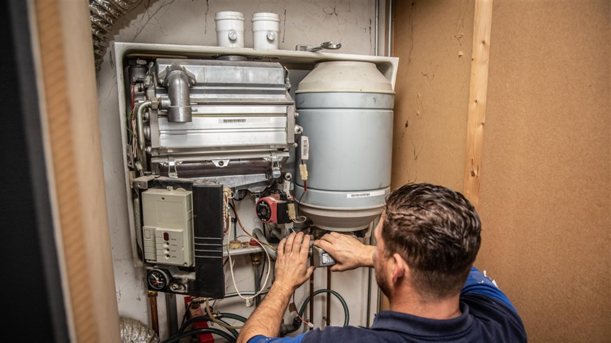
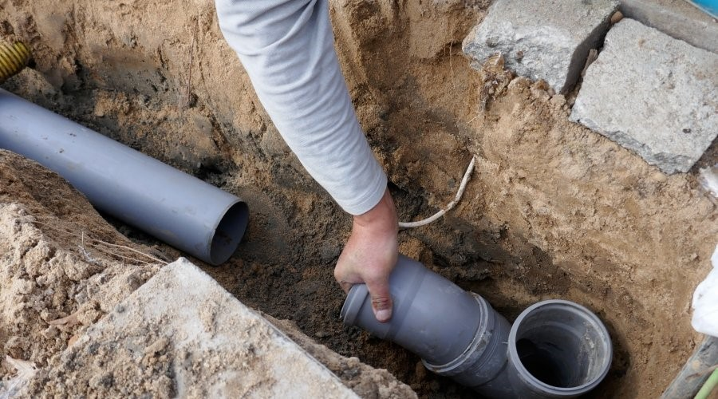

Loodgieter in Zutphen, dag en nacht.
Lekkage, een verstopte wc of een ketel die het opgeeft? Bel en je hebt meteen een vakman aan de lijn. Geen wachtrij, ook niet om drie uur 's nachts.
Bel direct 0575 781 035Gemiddeld binnen 40 minuten bij je, ook in De Hoven. Vaste voorrijkosten van 45 tot 65 euro. Twee jaar garantie op arbeid en materiaal, op papier.

Wat is er aan de hand?
Van een druppelende sifon tot een rioolverstopping onder een monument. Staat jouw klus er niet tussen, bel dan gewoon even.
-
Lekkage
We sporen de lek op met een warmtecamera en akoestische apparatuur, zodat we gericht repareren zonder onnodig hak- en breekwerk. Voor je verzekeraar krijg je een rapport met foto's en meetgegevens.
-
Verstopping
Hogedrukspuit of elektrische veerspiraal, en bij een hardnekkig geval de rioolcamera erin. Zo pakken we de oorzaak aan, niet alleen het gevolg.
-
Wc ontstoppen
Een verstopte wc kan niet wachten. We stellen eerst vast waar het zit en kiezen dan de methode die je leidingen heel laat. Vooraf hoor je wat het kost.
-
Cv-ketel
Onderhoud, reparatie en vervanging van alle gangbare merken, waaronder Intergas, Nefit, Remeha en Vaillant. De meest voorkomende onderdelen hebben we in de bus, dus vaak is het in één bezoek klaar.
-
Rioolinspectie
Met een camera door de riolering, zodat je ziet wat er speelt voordat het schade geeft.
-
Leidingwerk
Nieuwe water-, gas- en afvoerleidingen, of de oude vervangen. In monumentale panden doen we dat voorzichtig en met respect voor het pand.
-
Dak
Dakreparaties, renovaties en onderhoud, zodat het water buiten blijft.
Een oude stad heeft oude leidingen.
Zutphen is een van de oudste steden van Nederland. Onder de Hanzepanden liggen middeleeuwse kelders, loden leidingen en gresbuizen uit de negentiende eeuw in gemetselde putten. Werken aan een monument vraagt iets anders dan een standaard reparatie. Daarom stemmen we werk in het beschermd stadsgezicht af met de Monumentenwacht.

Wat we per wijk tegenkomen
- Centrum
- Rond de Walburgiskerk en het Wijnhuis zitten nog loden leidingen en oude soldeerverbindingen die na tientallen jaren gaan lekken. Ketels staan hier soms in een kelder of onder de trap.
- Waterkwartier
- Langs de grachten geeft het hoge grondwater vaak vocht in huis.
- Noordveen
- In de huizen uit de jaren zestig en zeventig zorgen boomwortels en kalkaanslag voor verstoppingen, en is het oorspronkelijke leidingwerk vaak aan vervanging toe.
- Leesten
- Nieuwbouw met PVC-afvoeren, combiketels en vloerverwarming. Lekkages ontstaan hier vaak bij de verdeelunit, verstoppingen door vet en haar.
- De Hoven
- Aan de overkant van de IJssel, en toch gemiddeld binnen 40 minuten bij je.
Ook in Warnsveld, Gorssel, Lochem en Vorden ben je bij ons aan het goede adres.
Waar je op kunt rekenen
- 40 min
- Gemiddeld zo snel staan we bij je voor de deur, in alle Zutphense wijken.
- €45 tot €65
- Vaste voorrijkosten. Geen verborgen toeslagen, en de prijs hoor je voordat we beginnen.
- 2 jaar
- Garantie op arbeid en materialen, schriftelijk vastgelegd.
- 24/7
- Bereikbaar voor spoed, ook in het weekend en 's nachts.
Zo werken we
-
1
Je belt of mailt
We luisteren naar je situatie en plannen meteen een afspraak, vaak nog dezelfde dag. Bij spoed helpen we je aan de telefoon al met noodmaatregelen, zoals het afsluiten van de hoofdkraan.
-
2
Diagnose
De monteur komt langs, zoekt de echte oorzaak en geeft een vaste prijs voordat het werk begint.
-
3
Oplossing
We lossen het vakkundig op, met professionele apparatuur en goede materialen.
-
4
Nazorg
Je krijgt een heldere factuur met garantie. Vragen achteraf? Bel ons gerust.
“Midden in de nacht een gesprongen leiding gehad. Binnen 40 minuten stond er iemand voor de deur. Kalm, vakkundig en met verstand van zaken de boel opgelost. Enorm geholpen.”
“Snelle service en vakkundig werk. De loodgieter was binnen een uur ter plaatse in Zutphen en heeft het probleem snel verholpen. Zeer tevreden!”
Vaak gevraagd
Wat kost een loodgieter in Zutphen?+
De voorrijkosten zijn vast: 45 tot 65 euro. Na de diagnose krijg je een vaste prijs voor de klus, voordat we beginnen. Een offerte is gratis en vrijblijvend.
Hoe snel zijn jullie er?+
Gemiddeld binnen 40 minuten, in alle wijken van Zutphen en ook over de IJssel in De Hoven.
Hebben jullie ervaring met monumentale panden?+
Ja. We werken veel in Hanzepanden, met loden leidingen en in monumentale kelders. Werk in het beschermd stadsgezicht stemmen we af met de Monumentenwacht.
Kan ik ook 's nachts of in het weekend bellen?+
Ja, we zijn 24/7 bereikbaar. Spoedtarieven buiten kantoortijd hoor je vooraf, zodat je niet voor verrassingen komt te staan.
Krijg ik garantie?+
Twee jaar garantie op arbeid en materialen, schriftelijk vastgelegd.
Even bellen is vaak de snelste weg.
0575 781 035Liever mailen of een offerte aanvragen? Stuur een bericht naar info@loodgieterholland.com of gebruik het formulier.
- Bereikbaar
- 24/7, ook in het weekend
- Werkgebied
- Zutphen, Warnsveld, Gorssel, Lochem en Vorden